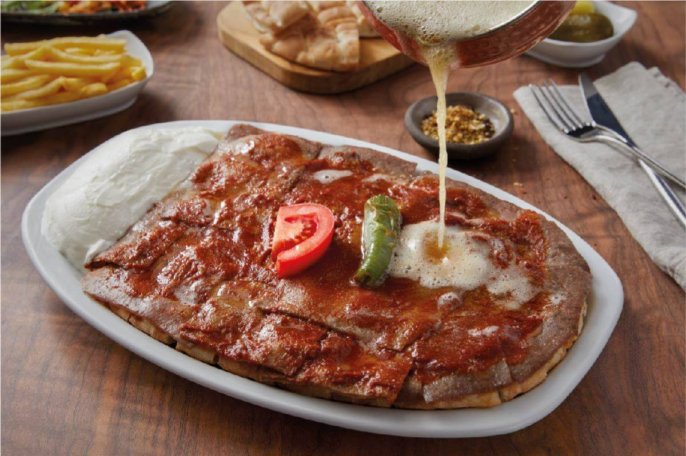

Iskender Recipe

Iskender kebab gets its name from persian Alexander the great because
Iskender kebab was best meal of the Alexander the great. Nowadays Turkish
cuisine has protected this perfect art piece.
Ingredients
- 2 Pita
- 1 Tomato
- 50 gr Pure Butter
- 1 Deserve spoon Sweet red pepper
- 1 Tea spoon Black pepper
- 1 Tea spoon Salt
- 1 Tea spoon Sugar
- 2 Tablespoon Yogurt
- 1 Tablespoon Tomato paste
Directives
- Firstly start with cutting the pitas like little cubes.
- Put the meats in to pan and start the cooking.
- After that cut the tomatous or you can blend them in the blander.
-
Get a pan and put some oil into pan. After that put the tomato paste
into pan, cook the tomato paste 1 or 2 minutes.
-
After the cooking paste add the spices and blended tomatous after 10
minutes your tomato sause will be done.
-
Get a broad plate add the pitas bottom of the plate for a first layer.
Add some tomato sauce on the pitas. For second layer add the meats like
a blanked on the pitas.
-
Last part is adding the sauce. Add the tomato souce on the meats and
melt some butter after that add this butter on the tomato souce. If you
wish you can add some yogurt side the plate.